+++
title = "Tasarım Sözlüğü: Kolaj"
seotitle="Kolaj Nedir? Nasıl Yapılır?"
description="Kolaj, elde mevcut her tür basılı, çizili ya da fotografik malzemenin bir yüzey üzerine yeni bir kompozisyon oluşturacak düzende yapıştırılmasıyla elde edilir."
url="sayi-9/tasarim-sozlugu-kolaj"
aciklama="Elde mevcut her tür basılı, çizili ya da fotografik malzemenin bir yüzey üzerine yeni bir kompozisyon oluşturacak düzende yapıştırılmasıyla elde edilir. Böylelikle kendileri sanatsal nitelikte olmayan çeşitli malzemeler, yalnızca yeni bir kompozisyon oluşturmak için kullanımları sayesinde bir sanat yapıtı meydana getirirler. Bu durumda sanatsal üretim süreci sadece bir kompoze etme etkinliğine indirgenmiş olur."
type="sayfa"
thumb="/img/tasarim-sozlugu-kolaj-thumbnail.jpg"
date = "2021-05-05"
sayi=["09"]
sayfa="04"
yazar=["goksu gokturk"]
tags= ["dergi", "tasarim sozlugu"]
+++

<div class="container">
    <div class="row">
        <div class="col-md-4"><p>
   Kolaj, Fransızca <strong>colle(tutkal)+ age= yapıştırmak</strong> sözcüğünden
   alıntıdır. Colle, Latince aynı anlama gelen <em>colla</em> sözcüğünden
   evrilmiş bir sözcüktür. Türkçe karşılığı ise &#39;kes-yap &#39;tır.
</p>
<p>
   “Kolajın sözlük anlamı; Elde mevcut her tür basılı, çizili ya da fotografik
   malzemenin bir yüzey üzerine yeni bir kompozisyon oluşturacak düzende
   yapıştırılmasıyla elde edilir. Böylelikle kendileri sanatsal nitelikte
   olmayan çeşitli malzemeler, yalnızca yeni bir kompozisyon oluşturmak için
   kullanımları sayesinde bir sanat yapıtı meydana getirirler. Bu durumda
   sanatsal üretim süreci sadece bir kompoze etme etkinliğine indirgenmiş olur.”
   (Sanat Kavram ve Terimleri Sözlüğü, Metin Sözen &amp; Uğur Tanyeli, 1986,
   s134)
</p>
   {{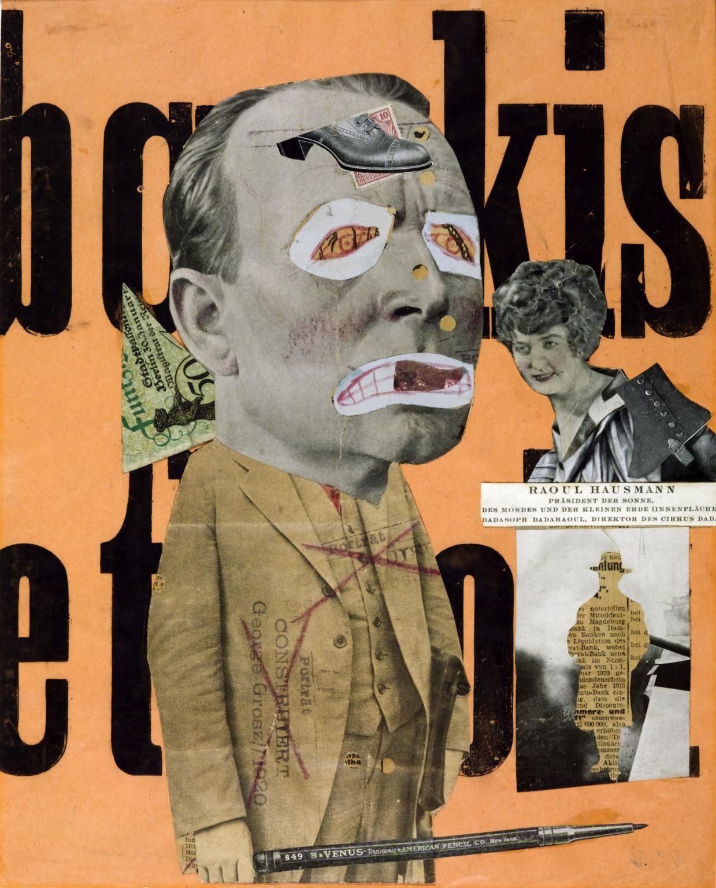}}
<small>Eser: Raoul Hausman</small></div>
        <div class="col-md-4">
   {{}}

<small>Eser: Robert Rauschenberg</small>
   {{}}
<small>Raoul Hausman, &#39;Mekanik Kafa&#39;</small></div>
        <div class="col-md-4"><p>
   Kolaj, eldeki malzemeler hayal gücüne bırakılarak kurgulanır. Birbiriyle
   ilişkisiz görünen zıtlıkları bir araya getirerek şaşırtıcı, merak uyandıran
   bir eser ortaya çıkartmak amaçlanır. Sanatçıların bu malzemeleri kullanmaları
   ile birlikte; tek başına sanatsal bir niteliğe sahip olmayan bu imgeler ve
   nesneler, bir kompozisyon içinde değerlendirilmiş ve sanat eserinin bir öğesi
   olarak kullanılmıştır.
</p>
<p>
   Kolaj sadece sanat değil birçok tasarım disiplininde de bir anlatım aracı
   olarak kullanılan görsel bir dildir. Kolaj yapısı gereği sanat ve tasarım
   uygulamalarında fikir üretmede hızlı ve yaratıcı çözümler üretmede
   çeşitliliğinin verdiği özgürlük alanı oluşturur.
</p>
<p>
   İki boyutlu tuval üzerindeki etkisi kadar heykel yapılarında ve ürünleşmede
   kolajın çok büyük bir katkısı vardır. Kolajın daha çok üç boyutlu eserlerde
   uygulanmasına <strong>Asamblaj</strong> denir.
</p>
   {{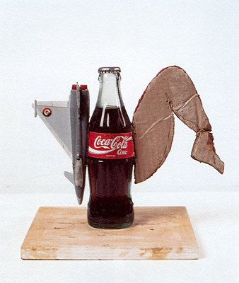}}
<small>Wolf Vostell, &#39;Sara -Jeva&#39;</small></div>
    </div>


<p>
   Tarihte Mısır heykellerinde, Bizans ikonalarında, Japon sanatında, Orta Asya
   Türk devletlerinde, Hunlarda ve Uygur Türklerinde kumaş, kağıt, boncuk gibi
   hazır malzemelerin yapıştırma, ekleme veya dikme yöntemleriyle bir araya
   getirilmesi olarak karşımıza çıkmıştır. Tuval resminde kolaj tekniğinin sanat
   tarihinde yer bulması Kübizm akımıyla birlikte oldu. 20. yüzyılda Kübizmle
   birlikte sanatçılar resmin sınırlarını zorlayan malzeme ve yöntem
   kullanımıyla geleneksel anlayışın dışına çıkan eserler ürettiler. Picasso ve
   Braque boya ve fırça gibi geleneksel resim malzemelerinin yanında kumaş,
   gazete, dergi, vb. malzemeleri kullanarak kolaj tekniğinde eserler üretmiş ve
   yeni bir düşüncenin ortaya çıkmasını sağlamışlardır.
</p>
<p>
   Daha sonra Dadacılar ve Gerçeküstücüler tarafından geliştirilen
   <strong>Fotomontaj</strong> tekniğinin öncüsü kolajdır. Yine II. Dünya savaşı
   sonrasında ortaya çıkan Pop Art, Yeni Dada, Yeni Gerçekçilik gibi akımların
   eserlerinin de ilham kaynağıdır.
</p>

    <div class="row">
        <div class="col-md-4">
   {{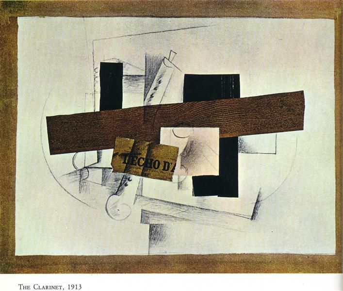}}
<small>George Braque, “Klarnet Natürmortu&quot;</small></div>
        <div class="col-md-4"><p>
   “Kübist resimle birlikte malzemenin resme girişi, tuvalin olanaklarını
   arttırmış ve tuval nesnesinin sadece bir yanılsamadan ibaret olmadığının fark
   edilmesini sağlamıştır”[1]
</p>
<p>
   Kolaj, malzemesi ne olursa olsun, izleyicide gerçeklik duygusunu oluşturmak
   için yansımacı bir anlayışla dış gerçekliği iç gerçeklikle bağdaştırarak
   kurmaca gerçekliği kurmaktır. Bu kurmaca gerçeklik, yansıtmacı sanat
   anlayışında ulaşmak istenenin pekiştirilmiş bir vurgusudur. Bu vurguya
   ulaşmak isteyen çağımız sanatçısı kolajın dışında kendini ifade ederken araç
   olarak çok seçmeli. Sınırsız bir dil zenginliğiyle kendini doğru anlatabilme
   şansını elde eder.[2]
</p></div>
        <div class="col-md-4">
   {{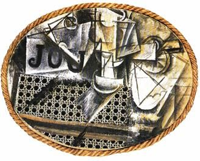}}
<small>Pablo Picasso, Bambu Sandalyeli Natürmort, 29x37 cm, kolaj, 1913</small></div>
    </div>

    <div class="row">
        <div class="col-md-4">
   {{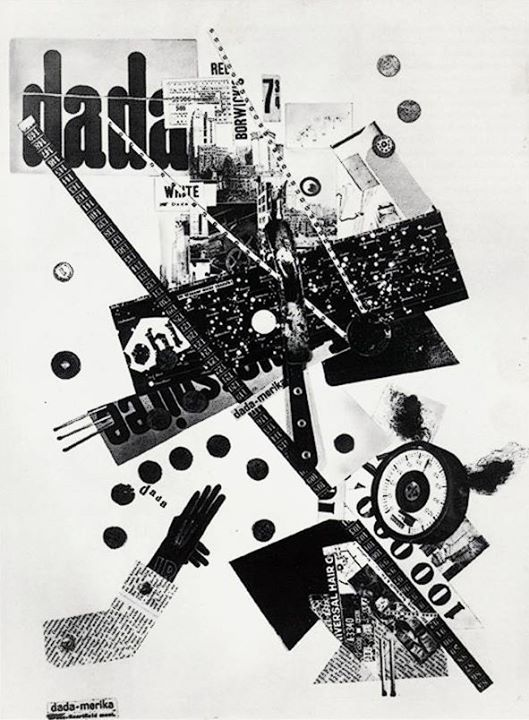}}
<small>George Grozs ve John Heartfield, Dada Merika, kolaj, 1920</small>
</div>
        <div class="col-md-4">
   {{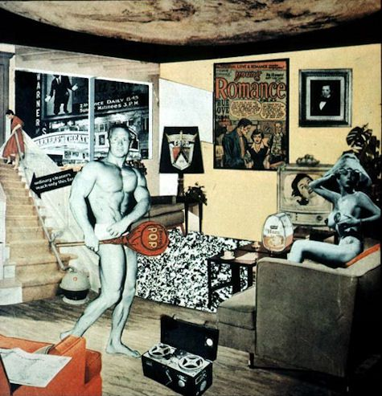}}
<small>Richard Hamilton, Bugünün Evlerini Bu Denli Cazip Kılan Nedir? Kolaj, 1956</small></div>
        <div class="col-md-4">
   {{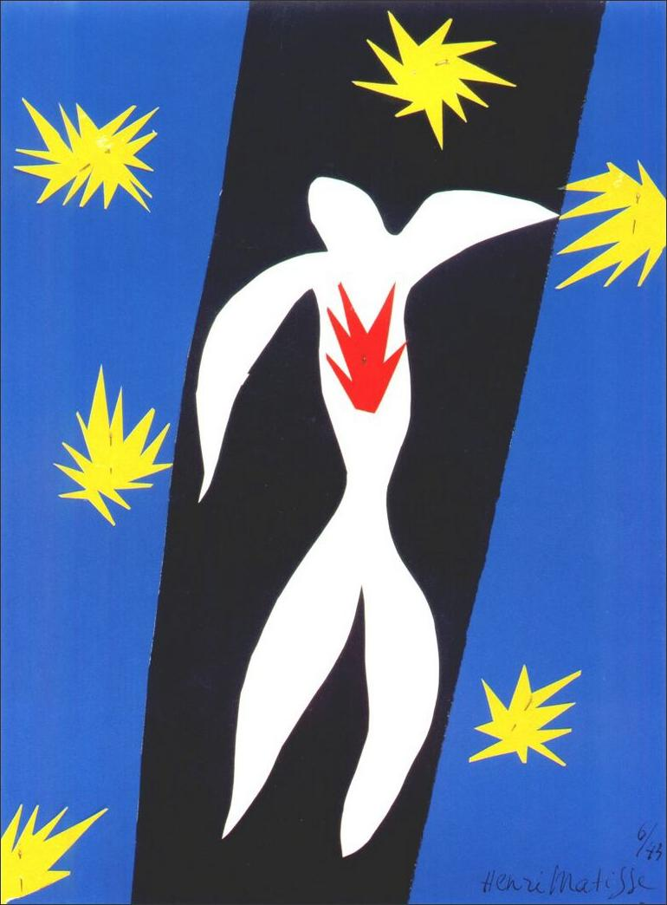}}
<small>Henri Matisse, Kolaj, The Museum of Modern Art, New York, 1953</small></div>
    </div>

    <div class="row">
        <div class="col-md-6"><blockquote>
   <p>
      &quot;Tam olarak önemsediğimiz ve nasıl kullanacağımızı bilmediğimiz
      malzemelerle gerçekliği ifade etmeyi araştırdık.&quot;- Guillaume
      Apollinaime[3]
   </p>
</blockquote>
<blockquote>
   <p>
      &quot;Kübizmde desen, tasarım, ve renk, bütün diğer ekollerde olduğu gibi
      aynı yaklaşımla ve aynı ruhla algılanmış ve uygulanmıştır. Resme daha önce
      görmezlikten gelinen nesneler ve biçimler soktuğumuz için, kübizm konuları
      farklı olabilir. Gözlerimizi ve beynimizi çevremize açık tuttuğumuz
      söylenebilir. - Pablo Picasso[4]
   </p>
</blockquote></div>
        <div class="col-md-6"><blockquote>
   <p>
      &quot;Birbiri ile ilişkisiz parçaları, gerçek fonksiyonlarını yitirterek,
      birbirine monte edilmesiyle yeni bir gerçeklik olgusu yaratan montaj
      tekniği sayesinde, her tür sıradan nesne, sanatın malzemesine
      dönüşebilir.”[5]
   </p>
</blockquote>
<blockquote>
   <p>
      “Resimlerimde kullandığım yapıştırma kağıtlar, ahşap taklitleri- ve
      benzeri başka öğeler-bu öğelerin anlaşılırlığından dolayı başarılı olmuş,
      onların trompe l’oeil gibi algılanmasına yol açmıştır, oysa durum tam
      tersidir. Bu basit ögeler aklın ürünü olarak espasta yeni bir biçimin
      meşru kılınmasına yardımcı olur”- Georges Braque[6]
   </p>
</blockquote>
<p><em>trompe l’oeil</em>: gözü yanıltan illüzyonist resim.*</p></div>
    </div>

<blockquote>
   <p>
      “Bir gezgin kırık porselen parçaları bulur. Yapıştırıcıyla işe girişir ve
      bu parçaların bir çay tabağı şekli aldığını görür. Bu porselenin eski
      sahibi, kırılmadan önce bunun aslında bir çay fincanı olduğunu söyler.
      Ondan önceki sahibi ise çay fincanından da önce aslında bir Adonis
      heykelciği olduğunu anlatır. Bu hikâyenin özü şu; Her parça aslında
      bulunmuş ve sonra bir araya getirilmiştir” - Richard Aldrich[7]
   </p>
</blockquote>
    <div class="row">
        <div class="col-md-4">
   {{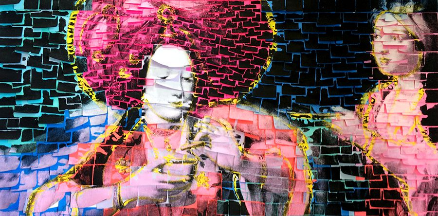}}
<small>
   Ardan Özmenoğlu, Coffeetime, Post-it not kağıtları üzerine karışık teknik,
   2014.
</small><br>
   {{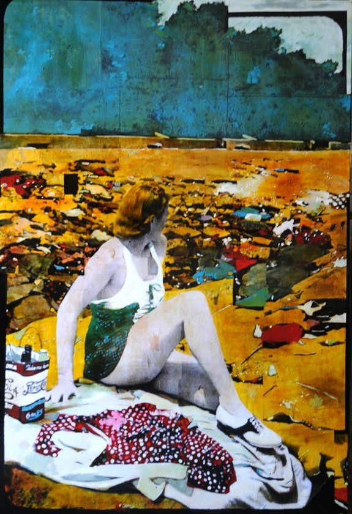}}
<small>Eser: Ayline Olukman</small></div>
        <div class="col-md-4">
   {{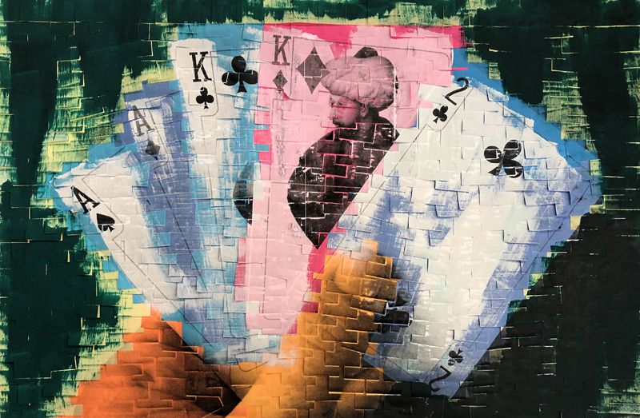}}
<small>Eser: Arda Özmenoğlu</small>
   {{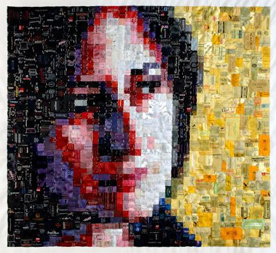}}
<small>
   Sabire Susuz, İsimsiz(Detay), 100x100 cm, saten kumaş üzerine tekstil etiket,
   2006.
</small><br></div>
        <div class="col-md-4">
   {{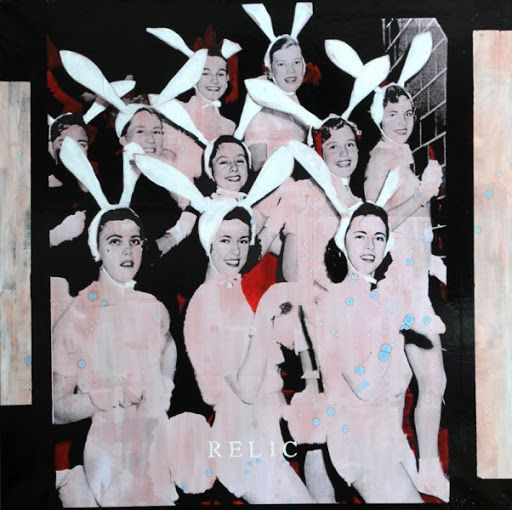}}
<small>Eser: Ayline Olukman</small>
   {{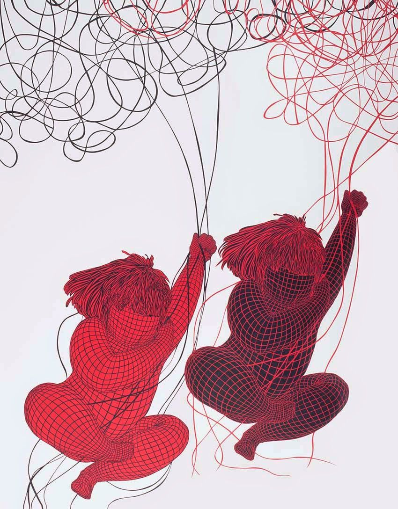}}
<small>Ayça Telgeren, ‘Sanatçının Eli’, 6 Haziran 2015</small>
</div>
    </div>
    

    <button
    class="btn markutbtn"
    data-target="#my-collapse"
    data-toggle="collapse"
    aria-expanded="false"
    aria-controls="my-collapse"
    >
    Kaynaklar
    </button>
    <div id="my-collapse" class="collapse">
    <pre> <small><code>  
        Sanat Kavram ve Terimleri Sözlüğü, Metin Sözen & Uğur Tanyeli, 1986, s134

        [1] Çetin ve Sarıkahya, 2017, s.195
        
        [2] Lütfü Kaplanoğlu, Sanat Dergisi, Sanatsal Bir Değer Olarak "Kolaj", s.103
        
        [3] Gaurady Roger, Picasso Saint- John Perse Kafka, *(Çev. Mehmet H. Doğan). Istanbul 2001, s.55*
        
        [4] Ahu Antmen, 20.yy Batı sanatında Akımlar, 2017, s59
        
        [5] Adnan Turani,1999 s.112
        
        [6] Ahu Antmen, 20.yy Batı sanatında Akımlar, 2017, s54
        
        [7] *Wilson M., Çağdaş Sanat Nasıl Okunur, 2015, s28*
        
        https://adnanturani.com/
        
        http://www.gallerytime.org/STILL-LIFES.html
        
        https://dergipark.org.tr/tr/download/article-file/1209
        
        https://dergipark.org.tr/tr/download/article-file/397437
        
        https://dergipark.org.tr/tr/download/article-file/28954
        
        https://dergipark.org.tr/tr/download/article-file/1111756
        
        https://dergipark.org.tr/tr/download/article-file/401228
        
        https://dergipark.org.tr/tr/download/article-file/1132159
        
        https://dergipark.org.tr/tr/download/article-file/581060
        
        https://dergipark.org.tr/tr/download/article-file/395414
        
        https://www.etimolojiturkce.com/kelime/kolaj
        
        https://kolaj.nedir.org/
        
        https://www.collageart.org/links/
        
        https://www.collageart.org/
        
        http://www.jennyhonnertabell.com/
        
        https://www.babblela.com/kolaj-nedir-nerelerde-ve-ne-icin-kullanilir/
        
        https://www.artkolik.net/haber/ardan-ozmenoglunun-bu-isin-sonu-yok-sergisini-gormek-icin-son-10-gun-4777
        
        https://art50.net/ardan-ozmenoglunun-almanyada-gerceklesen-made-in-istanbul-sergisi-uzerine/
        
        https://www.artfulliving.com.tr/sanat/matissein-son-donemi-kesik-kagitlar-sergisi-i-1393
        
        https://www.artsy.net/artwork/robert-rauschenberg-estate
      </code></small></pre>
    </div>

</div>
